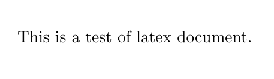
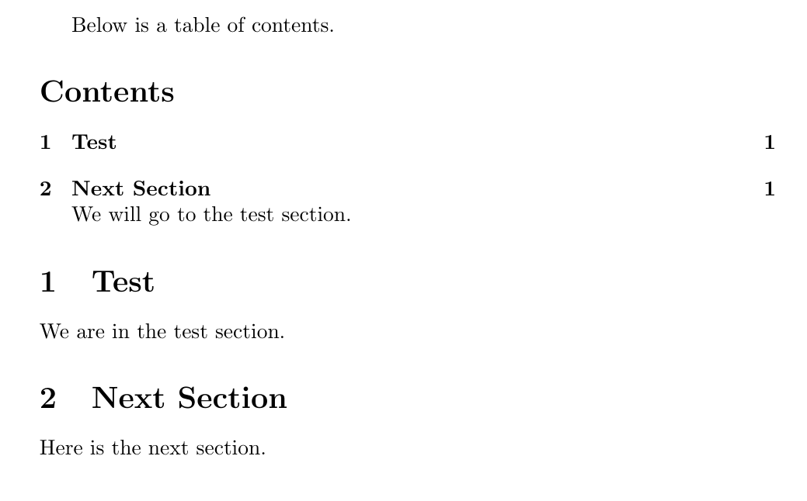
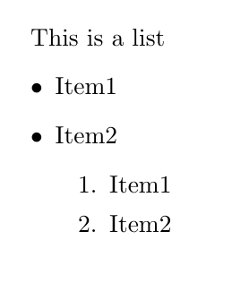
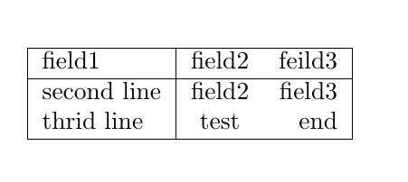
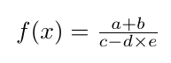
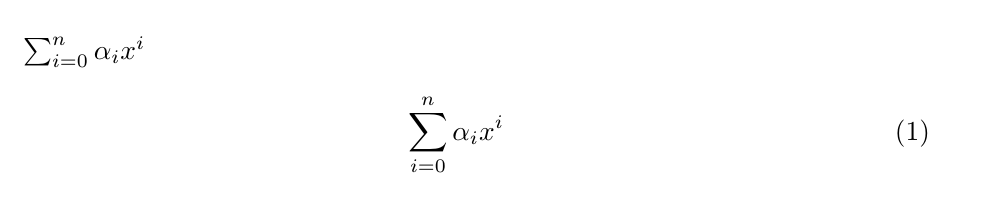
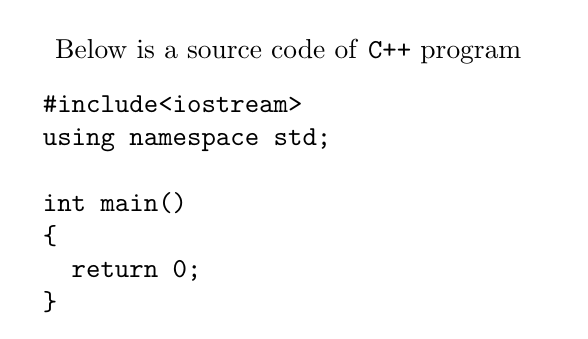

LaTeX 簡介
因為最近寫論文用 LaTeX 用蠻多的， 加上 LaTeX 用來作為純文字寫文件的工具是個不錯的選擇， 所以就想來簡單的介紹一下。
LaTeX 是什麼
LaTeX 的前身是 Tex。 TeX 是一個由 Donald Ervin Knuth 所開發的排版軟體， 尤其在數學公式上呈現不錯的效果。 但是其語法(一般稱 plaintex)要用來撰寫文件仍是不太方便， 所以 Leslie Lamport 就基於 Tex 建了一層較適合一般使用者寫文件的語法， 即為 LaTeX。 LaTeX 與一般 office word 所使用的 WYSIWYG(所見即所得) 理念不太一樣， 它傾向將「文件內容」與「文件排版」這兩件事分開。 一般常聽到的優點是這樣可以專注於文件的內容本身， 這點本身並沒有錯， 但就我學到現在的感覺， 這需要一定的使用經驗， 以及稍微了解如何自訂 LaTeX command 才有機會做到。 因為內容與排版分離的理念， 使用者也分為撰寫內容與撰寫排版的人， 一個好處是寫內容的人只要套用不同人寫的排版， 就可以輕易產生不同排版的文件， 也因此現在很多學術領域都會使用 LaTeX 作為撰寫論文的工具(漂亮的數學公式加上容易切換排版)。 但缺點在於， 一般使用者想根據自身需求調整排版相對是不容易的。
如果是對排版很要求的使用者， 那我想 LaTeX 並不會是一個比較好的選擇， 稍微知道世上有這個東西就好了。 但如果對於排版不太計較， 而且喜歡用純文字檔寫文件， LaTeX 是個不錯的選擇。 值得一提的是， 雖然 LaTeX 提供了強大的文件撰寫功能， 但對於輕量型的文件， 還是用 Markdown 或 Org Mode 這種語言比較方便。 另外稍微講講 LaTeX 的發音， TeX 這個字是來自希臘文， 所以念法是 technical 中 tech 的音。 至於 La 一般有兩種念法， large 的 la 或是 less 的 le。
開始使用 LaTeX
前面也提過了， LaTeX 主要是排版軟體， 我們透過其支援的語法來描述文件， 然後透過它來做排版， 所以要使用 LaTeX 首先就是得安裝相關的軟體。 TeX 相關的軟體發展到現在已經變得很複雜了， 所以通常安裝就是直接安裝一整套系統。 我自己使用的是 texlive 這套系統， 基本上主流的 Windows, MacOS, Linux 都支援， 當然也有其它的系統， 可以自己上網找找。 另外如果不喜歡自己安裝而想使用網頁來編寫， 也有相關的網站提供這種服務， 像是 overleaf。 環境建好後， 如果是使用網頁或 GUI 的人， 我想稍微找一下按幾個按鍵就行了。 至於終端機使用者， 可以用 latex 這個指令吃要排版的檔案產生 dvi 檔， 或是用 pdflatex 產生比較常見的 pdf 檔。
基本的 LaTeX 文件
首先簡單介紹一下 LaTeX 的 command，
LaTeX 的 command 基本上都是由 \ 開頭，
而 command 的參數由 {, } 給予，
如果有選項則多由 [, ] 給予。
另外 LaTeX 會用 % 作為註解符號，
從 % 到該行結尾都會被視為註解。
接著來介紹一下一個可以被 LaTeX 軟體所接收的最小文件， 基本上長成這樣
1: \documentclass{article} 2: 3: \begin{document} 4: \end{document}
來稍微解釋一下，
第一行的 \documentclass 是一個 LaTeX 的 command，
用來設定這份文件的類別，
LaTeX 提供幾個基本的類別，像是 article, report, book。
基本上類別決定了整個文件的排版格式，
所以藉由設定不同的類別，
便能更改不同的排版。
最後兩行的 \begin{document}, \end{document}
中間便是我們所要撰寫的文件內容。
在 LaTeX 中，
我們稱一組 \begin, \end 為一個 environment。
另外通常稱 \documentclass 和 \begin{document}
間的內容為 preamble。
下面是一個簡單文件的排版結果
1: \documentclass{article} 2: 3: \begin{document} 4: 5: This is a test of latex document. 6: 7: \end{document}

撰寫文件
介紹完基本的 LaTeX 文件， 我們就接著介紹一些一般文件常需要的功能如何在 LaTeX 達成吧。
文件結構
首先在 LaTeX 中，
空白行是很重要的，
因為一個空白行分隔了兩個段落，
這會導致排版有些差異。
所以除非你覺得文字描述已經到一個段落，
不要隨便加空白行(愛亂加的人在這)。
至於空白字元，像是空白、Tab 、換行，
LaTeX 都會自動忽略。
一般習慣會讓一個句子自成一行，
這些句子再透過 LaTeX 將它接起來就好了。
如果想要強制換行，
可以用 \\ 或是 \newline 。
至於章節的設置，
LaTeX 提供 \chapter, \section, \subsection,
\subsubsection
這些 command，
其參數即為章節的名稱。
比如說我們接著要講 Document Structure 這個 section，
只要加上一行 \section{Document Structure} 就可以了。
\chapter 是要比較注意的點，
不是所有的文件類別都可以用，
在基本的類別中只有 report, book 可以用 \chapter 。
另外可以透過 \tableofcontents 來自動產生目錄。
如果想要在 pdf 檔中可以直接從目錄跳到該章節，
可以在 preamble 中加上 \usepackage{hyperref} 這個 command。
package 是 LaTeX 用來提供額外功能的方法，
而 hyperref 這個 package 會自動產生連結讓文件可以從目錄跳到各個章節。
使用各種 package 是 LaTeX 強大的地方，
同時也是它的痛點，
因為 package 實在是太多了。
下面是一個利用章節相關 command 寫成的文件範例， 值得注意的是， 為了產生目錄， 如果是從終端機執行 latex 命令， 我們會需要執行兩次。 第一次 latex 會產生副檔名為 toc 的檔案， 裡面存了目錄的資料， 第二次執行時 latex 會利用這個 toc 檔產生目錄。
1: \documentclass{article} 2: 3: \begin{document} 4: 5: Below is a table of contents. 6: 7: \tableofcontents 8: 9: We will go to the test section. 10: 11: \section{Test} 12: 13: We are in the test section. 14: 15: \section{Next Section} 16: 17: Here is the next section. 18: 19: \end{document}

列表
如果想要產生一個列表，
我們會需要使用 itemize 或 enumerate 這兩種 environment。
其中 enumerate 是用來產生數字列表的。
列表中的每一個項目都由 \item 開頭，
也可以在每個項目內再插個列表。
下面是一個範例
1: \documentclass{article} 2: 3: \begin{document} 4: 5: This is a list 6: \begin{itemize} 7: \item Item1 8: \item Item2 9: \begin{enumerate} 10: \item Item1 11: \item Item2 12: \end{enumerate} 13: \end{itemize} 14: 15: \end{document}

圖片
就我所知 LaTeX 本身好像沒有提供插入圖片的功能，
都是要靠 package 來達成。
一般常用的是 graphicx 這個 package，
要插入一個圖片可以用 \includegraphics 這個 command，
它的參數是圖片的路徑，
另外也有選項可以設定圖片大小。
比如：
\includegraphics[scale=0.5]{abc.png}
可以設定圖片為 abc.png，然後縮小成一半的大小， 而
\includegraphics[width=120pt]{test.pdf}
可以設定圖片為 test.pdf，然後寬度為 120pt。
表格
LaTeX 提供了 tabular 這個 environment 來製作一個表格，
它的參數決定了表格的欄數與對齊方式。
每個欄位由 & 分隔，每一行由 \\ 分隔，
另外可以用 \hline 來畫橫線。
下面是一個例子
1: \documentclass{article} 2: 3: \begin{document} 4: 5: \begin{tabular}{|l|cr|} 6: \hline 7: field1 & field2 & feild3 \\ 8: \hline 9: second line & field2 & field3 \\ 10: thrid line & test & end \\ 11: \hline 12: \end{tabular} 13: 14: \end{document}

可以看到在 tabular 的參數中，
我們用 | 來表示要畫一條直線，
l, c, r，分別代表置左、置中、置右。
數學公式
在 LaTeX 描述數學公式還蠻複雜的，
這裡只簡單講幾個點。
首先 LaTeX 處理文字的數學公式的方式是不同的，
而數學公式又分為文字模式(text mode)與展示模式(display mode)。
文字模式可以用 $, $ 框住來達成，
而展示模式則是用 equation 這個 environment。
基本上 LaTeX 將數學公式的每個字母都當成一個數學上的變數，
而數字就是數字。
加減乘除分別可以用 +, -, \times, \frac 做到，
下面是一個例子
$f(x) = \frac{a + b}{c - d \times e}$

上下標分別可以用 ^, _ 來描述，
如果上下標是個複雜的式子，
可以用 {, } 框起來。
下面展示一個稍微複雜的例子，
也可以看到文字模式與展示模式的些微差異
$\sum^n_{i=0}\alpha_ix^i$ \begin{equation} \sum^n_{i=0} \alpha_i x^i \end{equation}

純文字
如果像我寫這篇文章，或是要在文件中顯示程式碼，
我們可以用 verbatim 這個 environment。
它會將所有包住的文字用打字機的字型顯示(就是一般文字編輯器會看到的字型，不要跟我說筆記本是文字編輯器)。
如果只是想將幾個字用打字機字型顯示，
可以用 \texttt 這個 command。
下面是個例子
Below is a source code of \texttt{C++} program \begin{verbatim} #include<iostream> using namespace std; int main() { return 0; } \end{verbatim}

如果想要更複雜的操作程式碼的顯示， 可以參考 listings 這個 package。
中文
用 LaTeX 要寫中文得使用 package 來達成，
其中一個比較有名的 package 是 CJK。
使用方式很簡單，首先在 preamble 加上 \usepckage{CJK} ，
然後在文件中想要插入中文的部分用 CJK 這個 environment 包起來。
這個 enironment 有兩個參數，
第一個參數是設定文字編碼，
根據自己寫的文件編碼繁體中文常見的有 Bg5 和 UTF8 ，
第二個參數是設定字體，常見的有 bkai(標楷體) 和 bsmi(細明體)。
下面是一個範例
1: \documentclass{article} 2: 3: \usepackage{CJK} 4: 5: \begin{document} 6: 7: \begin{CJK}{UTF8}{bkai} 8: 這是一個中文範例。 9: \end{CJK} 10: 11: \end{document}
LaTeX 本身對非英語系語言支援不太好，
CJK 這個 package 是利用編碼轉換來處理中日韓的文字，
但在一些特殊情況仍會有問題。
如果想要較好的中文支援，
可以選用 XeLaTeX 來做排版軟體，
它預設支援 UTF 的編碼。
而在 XeLaTeX 中需要改用 xeCJK package 來處理中文，
只要在 preamble 加上 \usepackage{xeCJK} 就可以支援中文了，
至於字體可以用 \setCJKmainfont 做設定，
基本上作業系統上支援的字體都可以用，
很方便。
如果有特殊需求想要中文直書，
只要在設定字體時多加選項即可，
下面是個在 Windows 上的範例
1: \documentclass{article} 2: 3: \usepackage{xeCJK} 4: 5: \setCJKmainfont[RawFeature={vertical:+vert}]{標楷體} 6: 7: \begin{document} 8: 9: 這是中文直書的測試。 10: 11: \end{document}
更深入了解 LaTeX
想要更深入的了解如何使用 LaTeX， 我想上網應該都蠻多資源的。 至於本地端的話， 可以到安裝路經中找各種文檔， 終端機的話可以用 texdoc 程式來叫出文檔。 其中 lshort 是個介紹 LaTeX 蠻完整的文檔， 我 LaTeX 基本上都是從這學的。 它有簡體中文翻譯 lshort-chinese， 裡面也多介紹了如何在 LaTeX 寫中文。
小結
基本的 LaTeX 介紹就是這樣了， 剩下更複雜的功能就得從文檔自學跟從經驗中學著如何使用。 當然如果身邊有個會 LaTeX 的人直接問應該是比較快啦。 大概就是這樣。
嘛，想說好久沒寫些自嗨的教學文章， 所以就寫了這一篇。 當然也有這篇文章可以成為實驗室學弟妹學習文件的妄想， 不過就不要想太多了。 不的不說 LaTeX 的確是不錯的排版系統， 尤其對我這種對純文字檔有種偏執的人。 但過於複雜也的確是它的缺點， 要用的精學習曲線會有點高。 要寫像這篇比較簡易的文章， 還是用 Org Mode 比較順阿。 不過要搞定 LaTeX backend 時還是要一點相關知識才行。 廢話完了， 還得來想想碩論該怎麼解決啊…